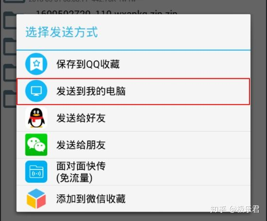
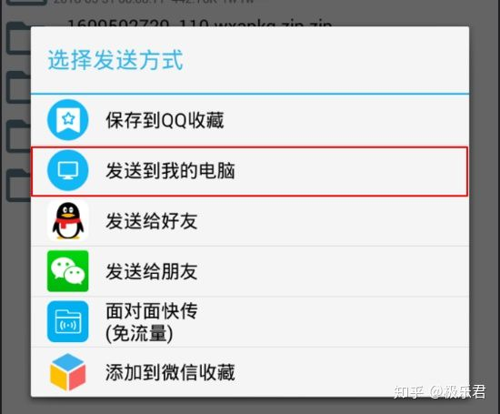

只需两步获取任何微信小程序源码
最近在学习微信小程序开发，半个月学习下来，很想实战一下踩踩坑，于是就仿写了一个滴滴他们家的青桔单车小程序的前端实现，过程一言难尽，差不多两周时间过去了，发现小程序的坑远比想象的要多的多！！在实际练手中，完全是黑盒的，看到人家上线的小程序的效果，纯靠推测，部分效果在绞尽脑汁后能做出大致的实现，但是有些细节，费劲全力都没能做出来。很想一窥源码，查看究竟，看看大厂的前端大神们是如何规避了小程序的各种奇葩的坑。
于是就想到获取到小程序地源文件，然后再对其进行反编译还原为源代码，来作为学习参考。我百度了各种关于小程序地反编译教程，但是感觉都不太适合像我这样地初学小白，踩了挺多坑。在这里把我重新简化好的， 快速地获取一个微信小程序源码 的方式记录下来。
简单聊一下 xxxxx.wxapkg
先来想想一个很简单的问题，小程序的源文件存放在哪？
- 当然是在微信的服务器上。
但是在微信服务器上，普通用户想要获取到，肯定是十分困难的，有没有别的办法呢？
- 简单思考一下我们使用小程序的场景就会明白，当我们点开一个微信小程序的时候，其实是微信已经将它的从服务器上下载到了手机，然后再来运行的。
- 所以，虽然我们没能力从
服务器上获取到，但是我们应该可以从手机本地找到到已经下载过的小程序源文件
那么如何才能在手机里找到小程序的源文件包呢？
- 这里只以安卓手机为例，毕竟穷逼不曾拥有过苹果手机
- 具体目录位置直接给出：
/data/data/com.tencent.mm/MicroMsg/{{一串32位的16进制字符串文件夹}}/appbrand/pkg/
- 在这个目录下，会发现一些
xxxxxxx.wxapkg类型的文件，这些就是微信小程序的包
准备材料
- node.js运行环境
- 如果没有安装nodejs，请先安装一下
- 下载地址：http://nodejs.org/en/
- 反编译的脚本
- 这里提供一个Github上
qwerty472123大神写的node.js版本的，当然也有其它版本的，这里我只是简单地用node.js版本举例 - 地址： github.com/qwerty47212…
- 安卓模拟器（要求自带root权限）
- 我使用的是
夜神模拟器，用来获取小程序源文件 - 下载地址： www.yeshen.com/cn/download…
详细步骤：
- 微信小程序的格式就是:
.wxapkg - .wxapkg是一个二进制文件，有其自己的一套结构。
- 关于.wxapkg的详细内容可以参考 lrdcq大神的博文：微信小程序源码阅读笔记
- 但是这里有个 坑 ，想要进入到上面这个目录的话，用手机自带的文件管理器肯定是不行的，
安卓或者iPhone都要要用到第三方的文件管理器，比如：RE文件管理器，并且安卓需要取得root权限，而苹果手机肯定是要越狱的，且 iphone的越狱难度>>安卓获取root ，不管越狱还是root，这都太费劲，当然有能力的同学可以直接从手机上来操作，但是这里不推荐从真机上获取。
使用安卓模拟器获取到.wxapkg文件
不用越狱，不用root，使用电脑端的 安卓模拟器 来获取是一个 非常简单快捷且万能的 获取方式，具体步骤如下：
- 打开安装好的安卓模拟器，并在模拟器中安装
QQ、微信、RE管理器
QQ、微信在模拟器自带的应用商店里搜索下载安装即可RE管理器的下载地址： pan.baidu.com/s/1PPBx08rN…- 下载好后直接拖拽进打开的模拟器窗口就会自动安装
- 设置一下模拟器
- 以我个人认为比较好用的
夜神模拟器举例 - 首先到模拟器内部设置超级用户权限


- 这些操作的目的都是为了能让
RE管理器顺利的获取到ROOT权限
- 接下来在模拟器里打开微信，然后在微信中运行你想要获取的下程序（这其实是让微信把小程序的源文件包从服务器下载到了本地了）
- 就以我说的这款青桔单车的小程序举例（希望滴滴的大神不会想打死我~）
- 在模拟器微信中运行一下后， 直接切回模拟器桌面运行RE浏览器 来到目录
/data/data/com.tencent.mm/MicroMsg/{{一串32位的16进制字符串文件夹}}/appbrand/pkg/- 就抵达了目的文件夹


- 你会看到发现里面的一些.wxapkg后缀的文件，就是它们没错啦，可以根据使用的时间来判断那个是你刚才从服务器下载过来的
- 一般小程序的文件不会太大，可以结合时间来判断，长按压缩所选文件,然后再将压缩好的包通过QQ发送到
我的电脑 - 如果不进行压缩的话，是无法将这个文件通过QQ来发送的
 
- 所以QQ的这个功能可以让我们很方便的拿到源文件，而不必到电脑目录去找模拟器的文件目录。
- 解压。这样几步简单操作，就成功拿到了小程序的源文件了。
使用反编译脚本解包 wxapkg
- 到这里你应该已经将反编译脚本从github下载 或者 clone 到本地某个目录
- 打开nodejs命令窗口
- cd 到你clone或者下载好的反编译脚本目录下
- 在node命令窗口中依次安装如下依赖：
npm install esprima
npm install css-tree
npm install cssbeautify
npm install vm2
npm install uglify-es - 安装好依赖之后，就是最后一步了，反编译 .wxapkg 文件
- 在当前目录下输入
node wuWxapkg.js [-d] <files...> //files 就是你想要反编译的文件名
例如：我有一个需要反编译的文件_163200311_32.wxapkg已经解压到了D盘根目录下,那么就输出命令
node .\wuWxapkg.js D:\_163200311_32.wxapkg - 回车运行

- 反编译脚本就能一步将.wxapkg 文件还原为微信开发者工具能够运行的源文件， 目录地址和你反编译的文件地址是一样的

然后在微信开发者工具新增项目即可打开

- 运行成功，源码获取完成

只需两步即可完成
至此我们就通过非常简单的方式获取到了一个想要的小程序源文件，并对齐进行了反编译还原 以后想要再反编译其他的小程序，非常快速， 真的只需要两步
- 使用模拟器找到小程序.wxapkg文件
- 使用nodejs 反编译脚本将.wxapkg文件反编译
使用此方法，绝大部分的小程序都能正常反编译出来，但是也会有一些特殊的情况，具体可以查看 qwerty472123 大神的readme文件
写在后面的话
.apk 之类的文件反编译非常困难，而小程序竟可以如此轻松随意地被获取到源码，根源在于小程序的开发团队并没有对小程序的执行文件进行有效的保护，也就是加密，所以我们才能使用别人写好的脚本直接进行反编译，其过程类似于解压。
实际上，小程序只是很简单的将图片、js和json文件压在一起，而压制的过程就是Wxml -> Html、 Wxml -> JS、Wxss -> Css，转换后文件二进制格式跟后缀名为wx二进制格式完全一致。
上线的源代码能如此简单的被获取到，不得不说小程序的源码安全存在很大的隐患，这一点很多开发者应该也知道，所以发现有些小程序会将重要的js逻辑代码柔在一个js文件中，这样，即使被获取了源码，也不是很容易读懂，但是任然避免不了被窥视的问题。 小程序作为微信生态内的新生力量，不仅被官方，也被很多开发者和内容创业者寄予厚望，处于对代码的安全性的考虑，这个漏洞迟早有一天会被 修复（封掉） 的。
所以这种这里介绍的获取小程序源码的方法，应该是不会太长久的。
作者：行无忌
链接：只需两步获取任何微信小程序源码-实战教程-小程序社区-微信小程序-微信小程序开发社区-小程序开发论坛-微信小程序联盟
著作权归作者所有。商业转载请联系作者获得授权，非商业转载请注明出处。
30 条评论
测试了两个小程序都成功了.
老厉害了
nice
你这是故意的吧
APK反编译也是分分钟的事吧。
那不是能拿到很多ak了